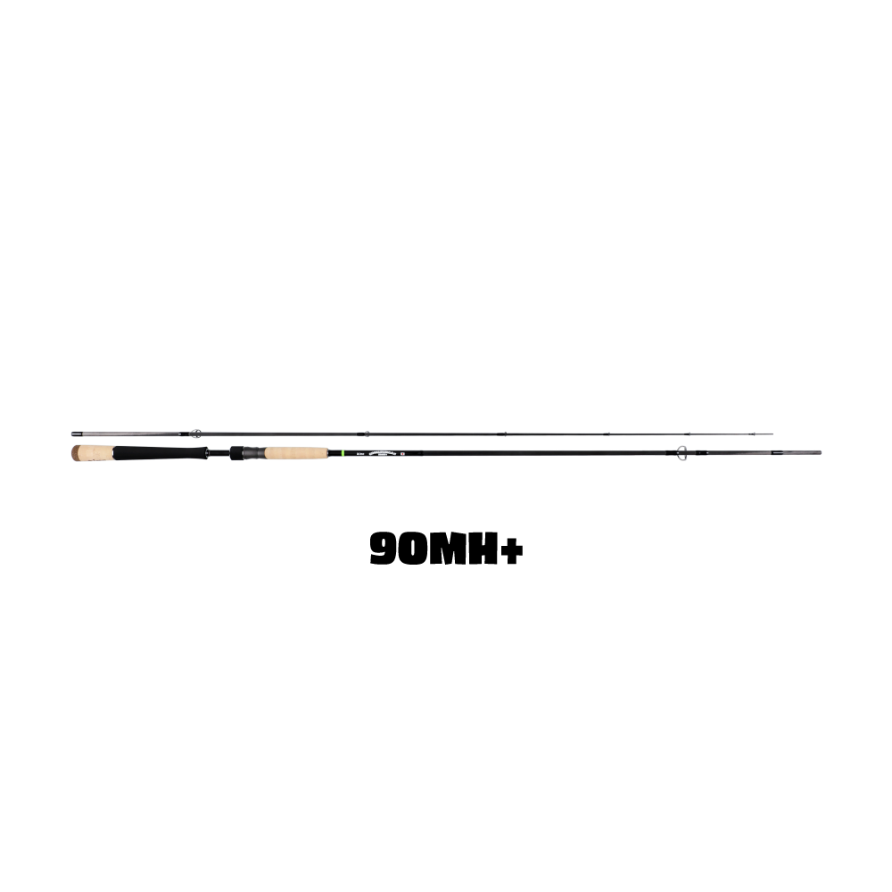
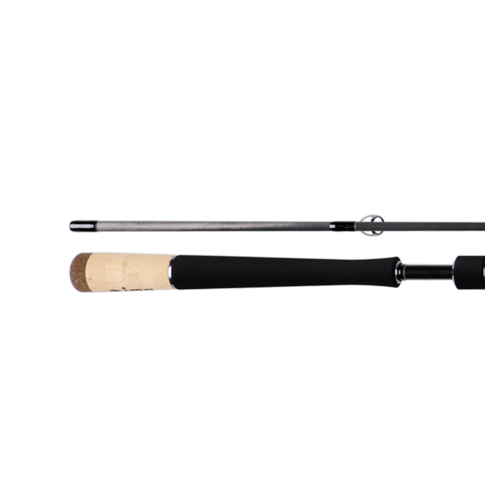
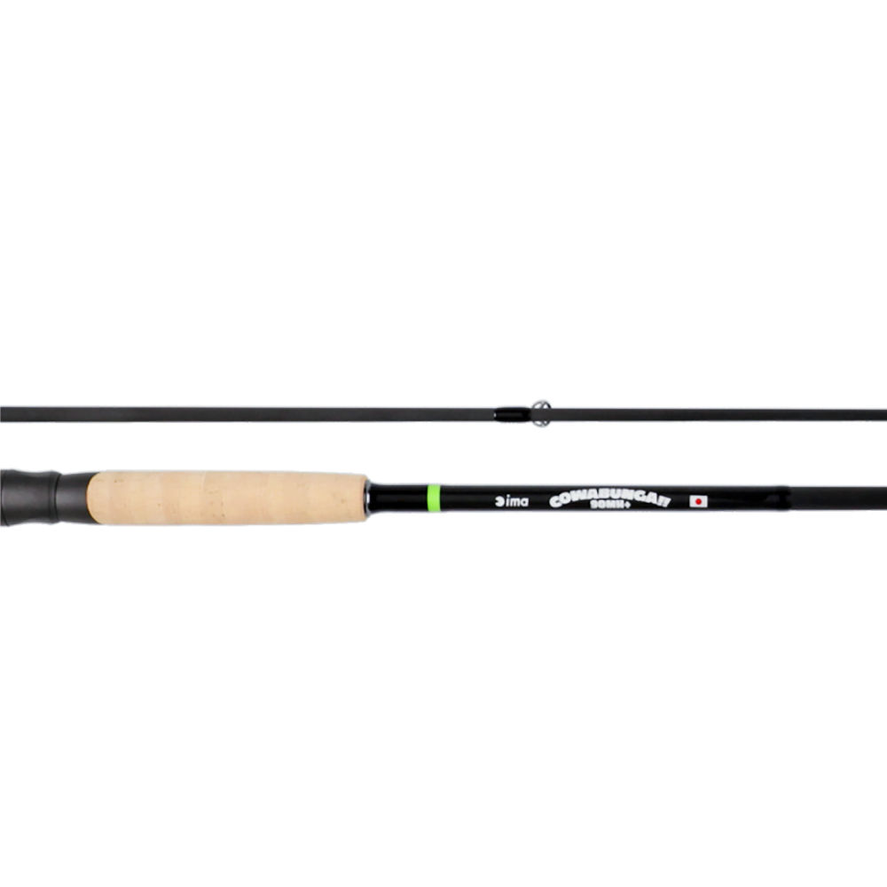
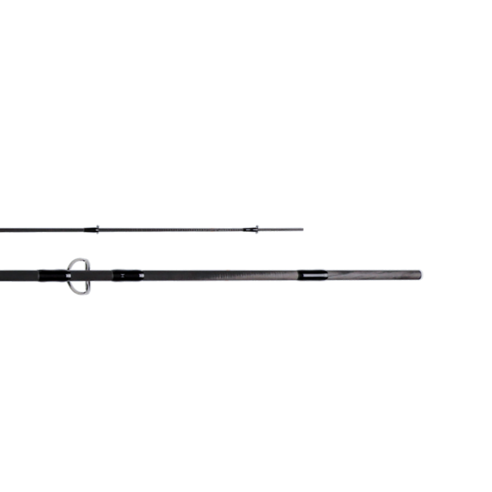

カワバンガ90MH+
（COWABUNGA!! 90MH+）
カワバンガ90MH+はima（アイマ）のシーバスロッドです。
メイドインジャパンのハイスペックロッドとして2024年に登場した「COWABUNGA!!（カワバンガ）」シリーズの3モデル目。しっかりした強さがありながら、カワバンガらしくしなやかに曲がり、軽いルアーでは柔らかく、重いルアーでは強く感じる「バリアブルテーパー」を実現しています。2026年11月10日発売、ima公式オンラインストア限定のモデルです。

画像出典:ima公式HP
スペック
- メーカー
- ima（アイマ）
- 品番
- R-CB003
- タイプ
- シーバスロッド（スピニング）
- 全長
- 9ft
- 自重
- 145g
- キャストウエイト
- 8〜45g
- ライン
- PE0.8〜2.0号
- アクション
- レギュラー
- 生産国
- 日本（メイドインジャパン）
- 価格
- 79,200円（税込）
- 発売
- 2026年11月10日（公式サイト予約：2026年10月20日 12:00開始）
- 販売
- ima公式オンラインストア限定
▼今すぐチェック
カワバンガ90MH+の特徴
強さがありながら、カワバンガらしくしなやかに曲がる3本目
-
バリアブルテーパー
軽いルアーを投げると柔らかく、重いルアーを投げると強く感じる、絶妙なバランスの「バリアブルテーパー」を採用しています。
-
90〜120mmのルアーから、より重いルアーまで
シーバスゲームのメインである90〜120mmのルアーを投げながら、よりハイウェイトなルアーも使いたいときの選択肢です。
-
障害物の多いフィールドで魚をコントロール
オープンエリアはもちろん、小磯や高低差の激しい場所など、魚を少し強引にコントロールしないといけない障害物の多いフィールドに向いています。
-
「曲がる」王道ロッド
軽量でしなやか、トルクも十分。美しくよく曲がり、魚とのやり取りはもちろん、あらゆる動作で釣りの魅力を感じられるシリーズの性格はそのままです。
カワバンガ90MH+の使い方
ミノーやシンキングペンシルなど、90〜120mmのシーバスルアーを中心に使いながら、必要に応じて重めのルアーまで投げ分けます。バリアブルテーパーなので、ルアーの重さに合わせて曲がり方が変わるのを感じながらキャストしましょう。
障害物の多い場所では、掛けたあとにロッドのトルクを生かして、魚を早めに障害物から引き離すのがポイントです。
カワバンガ90MH+の向いている釣り
小磯や高低差の激しい場所など、障害物の多いフィールド。オープンエリアでも、シーバスゲームの基本サイズのルアーに加えて、重めのルアーを使いたい場面に向いています。
ワンポイント
ima公式オンラインストア限定販売で、ほかの商品とあわせての注文はできないなど購入方法に条件があります。予約や購入の前に、公式サイトの注意事項を確認しておきましょう。
カワバンガシリーズの使い分け
| モデル | 長さ／自重 | ルアー重量／PE |
|---|---|---|
| 78ML | 7'8"／105g | 4〜28g／PE0.6〜1.0号 |
| 93M | 9'3"／135g | 7〜34g／PE0.8〜1.5号 |
| 90MH+ | 9'0"／145g | 8〜45g／PE0.8〜2.0号（本記事のモデル） |
港湾・湖・ボートなどショートレングスが強い場面は78ML、河川・サーフ・干潟などのオープンエリアでミノーからメタルジグまで投げるなら93M、障害物の多いフィールドで重めのルアーも使いたいなら90MH+と使い分けましょう。
ラインナップ
90MH+のディテールです（画像はima公式サイトのもの）。

グリップカワバンガらしいコルクと黒のグリップ。

リールシートリールシートまわり。COWABUNGA!!のロゴ入り。

ガイドバットガイドまわりの仕上げ。
画像出典:ima公式HP
カワバンガ90MH+と組み合わせたいリール・ライン
おすすめのリール
8〜45gのルアーとPE0.8〜2.0号に合わせるなら、4000番クラスのスピニングリールが目安です。
-
24ツインパワー 4000MHG SHIMANO
4000番クラスのスタンダードハイギア。PE1〜1.5号を使う、シーバスのオールラウンドな釣りに。
-
24ツインパワー 4000XG SHIMANO
4000番クラスのエクストラハイギア。障害物の多い場所で、糸ふけをすばやく回収したいときに。
-
24セルテート LT4000-CXH DAIWA
4000番クラスのエクストラハイギア。シーバスで定番のサイズとギア比。
おすすめのライン
推奨PEは0.8〜2.0号。オープンエリアならPE1〜1.2号、障害物の多い場所や重めのルアーを使うならPE1.5号前後が目安です。リーダーはPEの3〜4倍程度の号数を選び、障害物周りでは1ランク太くしておきましょう（詳しくはラインセットの記事で解説しています）。
-
 シーバスPE パワーゲーム
東レ
詳細はこちら＞
シーバスPE パワーゲーム
東レ
詳細はこちら＞
オールラウンドに使える定番のシーバス用PE。
-
 アバニ シーバス マックスパワー PE X9
バリバス
詳細はこちら＞
アバニ シーバス マックスパワー PE X9
バリバス
詳細はこちら＞
強度を重視したいハイエンドPE。小磯や障害物の多い場所での大型狙いに。
-
 グランドマックスFX ショックリーダー
クレハ シーガー
詳細はこちら＞
グランドマックスFX ショックリーダー
クレハ シーガー
詳細はこちら＞
大型狙いの定番リーダー。障害物周りでは太めの号数で。